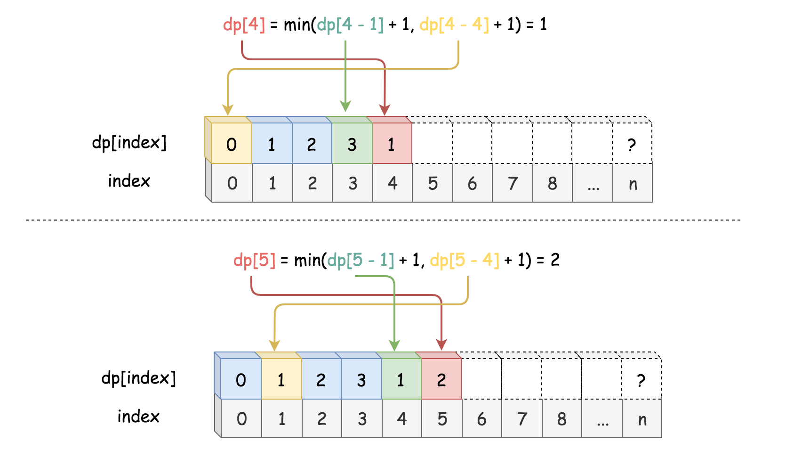
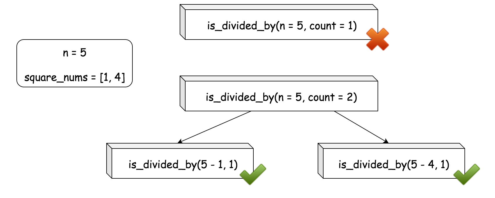
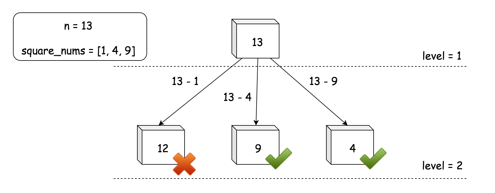
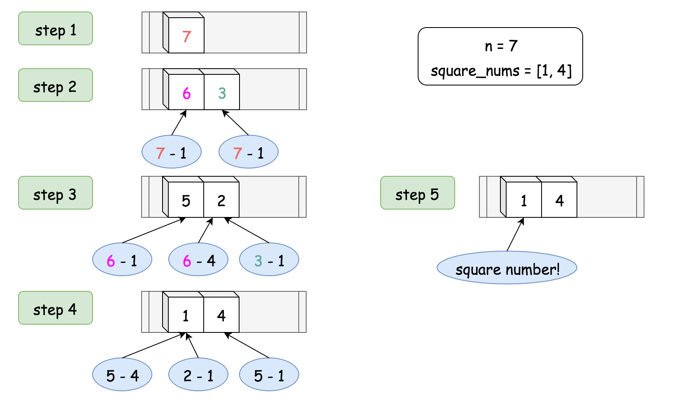

Given an integer n, return the least number of perfect square numbers that sum to n.
A perfect square is an integer that is the square of an integer; in other words, it is the product of some integer with itself. For example, 1, 4, 9, and 16 are perfect squares while 3 and 11 are not.
Example 1:
Input: n = 12 Output: 3 Explanation: 12 = 4 + 4 + 4.
Example 2:
Input: n = 13 Output: 2 Explanation: 13 = 4 + 9.
Constraints:
1 <= n <= 104
Solution
Approach 1: Brute-force Enumeration [Time Limit Exceeded]
Intuition
The problem asks us to find the least numbers of square numbers that can sum up to a given number. We could rephrase the problem as follows:
Given a list of square numbers and a positive integer number
n, one is asked to find a combination of square numbers that sum up ton, and the combination should contain the least numbers among all possible solutions.
Note: one could reuse the square numbers in the combination.
From the above narrative of the problem, it seems to be a combination problem, to which an intuitive solution would be the brute-force enumeration where we enumerate all possible combinations and find the minimal one of them.
We could formulate the problem in the following formula:
From the above formula, one can translate it into a recursive solution literally. Here is one example.
The above solution could work for small numbers. However, as one would find out, we would quickly run into the Time Limit Exceeded exception even for medium-size numbers (e.g. 55).
Or simply we might encounter the Stack Overflow due the to the excessive recursion.
Approach 2: Dynamic Programming
Intuition
The reason why it failed with the brute-force approach is simply because we re-calculate the sub-solutions over and over again. However, the formula that we derived before is still valuable. All we need is a better way to implement the formula.
One might notice that, the problem is similar to the Fibonacci number problem, judging from the formula. And like Fibonacci number, we have several more efficient ways to calculate the solution, other than the simple recursion.
One of the ideas to solve the stack overflow issue in recursion is to apply the Dynamic Programming (DP) technique, which is built upon the idea of reusing the results of intermediate sub-solutions to calculate the final solution.
To calculate the value of , first we need to calculate all the values before , i.e. . If we have already kept the solution for the number in somewhere, we then would not need to resort to the recursive calculation which prevents the stack overflow.
Algorithm
Based on the above intuition, we could implement the DP solution in the following steps.
- As for almost all DP solutions, we first create an array
dpof one or multiple dimensions to hold the values of intermediate sub-solutions, as well as the final solution which is usually the last element in the array. Note that, we create a fictional elementdp[0]=0to simplify the logic, which helps in the case that the remainder (n-k) happens to be a square number. - As an additional preparation step, we pre-calculate a list of square numbers (i.e.
square_nums) that is less than the given numbern. - As the main step, we then loop from the number
1ton, to calculate the solution for each numberi(i.e.numSquares(i)). At each iteration, we keep the result ofnumSquares(i)indp[i], while resuing the previous results stored in the array. - At the end of the loop, we then return the last element in the array as the result of the solution.
In the graph below, we illustrate how to calculate the results of numSquares(4) and numSquares(5) which correspond to the values in dp[4] and dp[5].

Here are some sample implementations. In particular, the Python solution took ~3500 ms, which was faster than ~50% submissions at the time.
Note: the following python solution works for Python2 only. For some unknown reason, it takes significantly longer time for Python3 to run the same code.
Complexity
-
Time complexity: . In main step, we have a nested loop, where the outer loop is of iterations and in the inner loop it takes at maximum iterations.
-
Space Complexity: . We keep all the intermediate sub-solutions in the array
dp[].
Approach 3: Greedy Enumeration
Intuition
Recursion isn't bad though. Above all, it provides us a concise and intuitive way to understand the problem. We could still resolve the problem with recursion. To improve the above brute-force enumeration solution, we could add a touch of Greedy into the recursion process. We could reformulate the enumeration solution as follows:
Starting from the combination of one single number to multiple numbers, once we find a combination that can sum up to the given number
n, then we can say that we must have found thesmallestcombination, since we enumerate the combinations greedily from small to large.
To better explain the above intuition, let us first define a function called is_divided_by(n, count) which returns a boolean value to indicate whether the number n can be divided by a combination with count number of square numbers, rather than returning the exact size of combination as the previous function numSquares(n).
In addition, the function is_divided_by(n, count) could also assume the form of recursion as follows:
Different from the recursive function of
numSquare(n), the recursion process ofis_divided_by(n, count)would boil down to its bottom case (i.e.count==1) much more rapid.
Here is one example on how the function is_divided_by(n, count) breaks down for the input n=5 and count=2.

With this trick of reformulation, we could dramatically reduce the risk of stack overflow.
Algorithm
- First of all, we prepare a list of square numbers (named
square_nums) that are less than the given numbern. - In the main loop, iterating the size of combination (named
count) from one ton, we check if the numberncan be divided by the sum of the combination, i.e.is_divided_by(n, count). - The function
is_divided_by(n, count)can be implemented in the form of recursion as we defined in the intuition section. - In the bottom case, we have
count==1, we just need to check if the numbernis a square number itself. We could use the inclusion test with the listsquare_numsthat we prepared before, i.e. . And if we use thesetdata structure forsquare_nums, we could obtain a faster running time than the approach ofn == int(sqrt(n)) ^ 2.
Concerning the correctness of the algorithm, often the case we could prove the Greedy algorithm by contradiction. This is no exception. Suppose we find a count=m that can divide the number n, and suppose in the later iterations there exists another number count=p that can also divide the number and the combination is smaller than the found one i.e. p < m. Given the order of the iteration, the count=p would have been discovered before count=m which is contradict to the fact that p comes later than m. Therefore, we can say that the algorithm works as expected, which always finds the minimal size of combination.
Here are some sample implementation. In particular, the Python solution took ~70ms, which was faster than ~ 90% submissions at the time.
Complexity
-
Time complexity: where
his the maximal number of recursion that could happen. As one might notice, the above formula actually resembles the formula to calculate the number of nodes in a complete N-ary tree. Indeed, the trace of recursive calls in the algorithm form a N-ary tree, where N is the number of squares insquare_nums, i.e. . In the worst case, we might have to traverse the entire tree to find the solution. -
Space Complexity: . We keep a list of
square_nums, which is of size. In addition, we would need additional space for the recursive call stack. But as we will learn later, the size of the call track would not exceed 4.
Approach 4: Greedy + BFS (Breadth-First Search)
Intuition
As we mentioned in the complexity analysis in the above Greedy approach, the trace of the call stack forms a N-ary tree where each node represents a call to the is_divided_by(n, count) function. Based on the above intuition, again we could reformulate the original problem as follows:
Given a N-ary tree, where each node represents a remainder of the number
nsubtracting a combination of square numbers, our task is to find a node in the tree, which should meet two conditions: 1). the value of the node (i.e. the remainder) should be a square number as well. 2). the distance between the node and the root should be minimal among all nodes that meet the condition (1).
Here is an example how the tree would look like.

In the previous Approach #3, due to the Greedy strategy that we perform the calls, we were actually constructing the N-ary tree level-by-level from top to down. And the we were traversing it in a BFS (Breadth-First Search) manner. At each level of the N-ary tree, we were enumerating the combinations that are of the same size.
The order of traversing is of BFS, rather than DFS (Depth-First Search), is due to the fact that before exhausting all the possibilities of decomposing a number n with a fixed amount of squares, we would not explore any potential combination that needs more elements.
Algorithm
- Again, first of all, we prepare a list of square numbers (named
square_nums) that are less than the given numbern. - We then create a
queuevariable which would keep all the remainders to enumerate at each level. - In the main loop, we iterate over the
queuevariable. At each iteration, we check if the remainder is one of the square numbers. If the remainder is not a square number, we subtract it with one of the square numbers to obtain a new remainder and then add the new remainder to thenext_queuefor the iteration of the next level. We break out of the loop once we encounter a remainder that is of a square number, which also means that we find the solution.
Note: in a typical BFS algorithm, the queue variable usually would be of array or list type. However, here we use the set type, in order to eliminate the redundancy of remainders within the same level. As it turns out, this tiny trick could even provide a 5 times speedup on running time.
In the following graph, we illustrate the layout of the queue, on the example of numSquares(7).

Here are some sample implementations. In particular, the Python implementation inspired from the post of ChrisZhang12240 took ~200 ms which was faster than ~72% of submission at that time.
Complexity
-
Time complexity: where
his the height of the N-ary tree. One can see the detailed explanation on the previous Approach #3. -
Space complexity: , which is also the maximal number of nodes that can appear at the level
h. As one can see, though we keep a list ofsquare_nums, the main consumption of the space is thequeuevariable, which keep track of the remainders to visit for a given level of N-ary tree.
Approach 5: Mathematics
Intuition
The problem can be solved with the mathematical theorems that have been proposed and proved over time. We will break down the problem into several cases in this section.
In 1770, Joseph Louis Lagrange proved a theorem, called Lagrange's four-square theorem, also known as Bachet's conjecture, which states that every natural number can be represented as the sum of four integer squares: where the four numbers are integers.
For example, 3, 31 can be represented as the sum of four squares as follows:
Case 1). The Lagrange's four-square theorem sets the upper bound for the results of the problem, i.e. if the number
ncannot be decomposed into a fewer number of squares, at least it can be decomposed into the sum of 4 square numbers, i.e. .
As one might notice in the above example, the number zero is also considered as a square number, so we can consider that the number 3 can either be decomposed into 3 or 4 square numbers.
However, Lagrange's four-square theorem does not tell us directly the least numbers of square to decompose a natural number.
Later, in 1797, Adrien-Marie Legendre completed the four-square theorem with his three-square theorem, by proving a particular condition that a positive integer can be expressed as the sum of three squares: where and are integers.
Case 2). Unlike the four-square theorem, Adrien-Marie Legendre's three-square theorem gives us a necessary and sufficient condition to check if the number can ONLY be decomposed into 4 squares, not fewer.
It might be tricky to see the conclusion that we made in the case (2) from the three-square theorem. Let us elaborate the deduction procedure a bit.
First of all, the three-square theorem tells us that if the number n is of the form , then the number n cannot be decomposed into the sum of 3 numbers of squares. Further, we can also assert that the number n cannot be decomposed into the sum of two squares, neither the number itself is a square. Because suppose the number n can be decomposed as , then by adding the square number zero into the expression, i.e. , we obtain the conclusion that the number n can be decomposed into 3 squares, which is contradicted to the three-square theorem. Therefore, together with the four-square theorem, we can assert that if the number does not meet the condition of the three-square theorem, it can ONLY be decomposed into the sum of 4 squares, not fewer.
If the number meets the condition of the three-square theorem, we know that if can be decomposed into 3 squares. But what we don't know is that whether the number can be decomposed into fewer squares, i.e. one or two squares. So before we attribute the number to the bottom case (three-square theorem), here are the two cases remained to check, namely:
Case 3.1). if the number is a square number itself, which is easy to check e.g.
n == int(sqrt(n)) ^ 2.
Case 3.2). if the number can be decomposed into the sum of two squares. Unfortunately, there is no mathematical weapon that can help us to check this case in one shot. We need to resort to the enumeration approach.
Algorithm
One can literally follow the above cases to implement the solution.
- First, we check if the number
nis of the form , if so we return 4 directly. - Otherwise, we further check if the number is of a square number itself or the number can be decomposed the sum of two squares.
- In the bottom case, the number can be decomposed into the sum of 3 squares, though we can also consider it decomposable by 4 squares by adding zero according to the four-square theorem. But we are asked to find the least number of squares.
We give some sample implementations here. The solution is inspired from the posts of TCarmic and StefanPochmann in the Discussion forum.
Complexity
-
Time complexity: . In the main loop, we check if the number can be decomposed into the sum of two squares, which takes iterations. In the rest of cases, we do the check in constant time.
-
Space complexity: . The algorithm consumes a constant space, regardless the size of the input number.
February 6, 2020 9:21 PM
To summarise:
Approach 1. vanilla recursion
Approach 2. recursion with caching but converted into bottom up dp
Approach 3. Iteratively deepening DFS on an n-ary tree
Approach 4. BFS on an n-ary tree
Approach 5. :)
Last Edit: February 1, 2020 11:00 PM
I wish if every leetcode's official article were like this.

October 20, 2019 5:42 PM
Very nice article!
Last Edit: November 25, 2019 3:37 PM
hi @treemantan @MR2017 we've raised the issue to our dev team. The TLE problem is now fixed! You guys can go ahead and submit solutions in both Python2 and Python3.
And sorry for the inconvenience.
January 26, 2020 9:08 PM
what a genius mathematical solution???
What's the point of Approach 4? Does everyone have time to look at all 4 solutions? How do you choose a solution for an interview, which mostly expects the interviewee to solve this in15-20 minutes? I thought Approach 4 is the one that was worth looking at, and the one I understood best.

November 3, 2019 8:38 PM
DP solution is Time Limit Exceeded
November 23, 2019 4:43 AM
I wish all the solutions on LeetCode were documented like this. Thanks a ton for writing this!
March 25, 2020 5:16 AM
Great article! Thank you authors!
December 8, 2019 11:17 AM
hi @__bearzx , the Approach 3 is actually more of BFS, rather than DFS, though the recursive nature of the function is_divided_by() could be confused as one of the characteristic of DFS.
If we consider each combination of is_divided_by(n, count) as a node in our traversal tree, then we could also view that the parameter count corresponds to the level of the tree in a reverse order. Before we consider the possibility that a number can be decomposed by count=k square numbers, we must first exhaust the possibilities/combinations that the number can be decomposed into count=k-1 square numbers, i.e. before we move on to the next level of k, we iterate the k-1 level first. Therefore, globally we could consider the algorithm as a sort of BFS, rather than DFS.
But you are also right ! For a individual invocation of is_divided_by(n, count), we were doing sort of DFS. So we could probably say that locally, for the is_divided_by function, it is DFS.